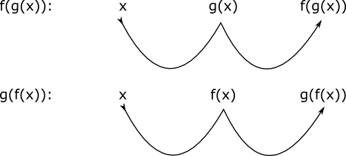

10. Sammansatt funktion
Då vi arbetar med trigonometriska funktioner får vi lätt funktioner som \( f(x)=\sin (2x) \), eller \( g(x)=\cos ^2 x \). Bägge funktionerna består av två funktioner: f av \( \sin x \) och \( 2x \). Då vi skriver \( g \) som \( (\cos x)^2 \) ser vi bättre att \( g \) består av \( x^2 \) och \( \cos x \).
För att kunna undersöka denna typ av funktioner måste vi behandla och lära oss om sammansatta funktioner.
Vi arbetar med funktionerna \( f(x)=x^2 \) och med \( g(x)=2x-1 \). Vi kan kombinera dessa funktioner på två olika sätt, som \( f(g(x)) \) och som \( g(f(x)) \). I \( f(g(x)) \) sätter vi först in värdet i funktionen \( g \) och sedan in resultatet i \( f \).
För \( g(f(x)) \) så börjar vi med att först sätta värdet i \( f \) och sedan sätter vi resultatet i \( g \).

Vi betecknar det som \( f(g(x))= (2x-1)^2 \) och \( g(f(x))=2x^2-1 \). Då vi bildar \( f(g(1)) = (2\cdot1-1)^2 = 1 \) och \( g(f(x))=2\cdot 1^2-1 = 3 \) så märker vi att det spelar en roll hur vi bildar våra sammansatta funktioner.
För beteckningen \( f(g(x)) \) eller \( f(g) \) är \( f \) yttre funktion och \( g \) är inre funktion. Vi sätter först värdet in i den inre funktionen och sedan in i den yttre funktionen.
För beteckningen \( f(g(x)) = f(g) \) brukar man skriva \( f \circ g \), som utläses "f boll g".
Uppgifter
- Identifiera funktionerna. Vilken funktion är den inre- och vilken är den yttre funktionen?
- \( (3x-1)^3 \)
\( x^3 \) är yttre, \( 3x-1 \) är inre funktion.
- \( \sqrt{4x-1} \)
\( \sqrt{} \) är yttre, \( 4x-1 \) är inre funktion.
- \( \lg 2x \)
\( \lg \) är yttre, \( 2x \) är inre funktion.
- \( (3x-1)^3 \)
- Identifiera funktionerna. Vilken funktion är den inre- och vilken är den yttre funktionen?
- \( \cos 4x \)
\( \cos x \) är yttre, \( 4x \) är inre funktion.
- \( \tan^2 2x \)
\( \tan^2 2x = (\tan 2x)^2 \).
\( x^2 \) är yttre, \( \tan 2x \) är inre funktion.
- \( \sin (\cos x) \)
\( \sin x \) är yttre, \( \cos x \) är inre funktion.
- \( \cos 4x \)
- Låt \( f(x)=\sqrt{x} \) och \( g(x)=x-1 \). Välj de rätta alternativen.
Påstående \( f(g) \) \( g(f) \) \( f \circ g \) \( g \circ f \) \( \sqrt{x-1} \) \( \sqrt{x}-1 \) Påstående \( f(g) \) \( g(f) \) \( f \circ g \) \( g \circ f \) \( \sqrt{x-1} \) \( \sqrt{x}-1 \) - Låt \( f(x)=3x^2 \) och \( g(x)=\sin x \). Bilda
- \( f \circ g \)
\( f \circ g = f(g)=3(\sin x)^2 = 3\sin^2x \)
- \( g \circ f \)
\( g \circ f = g(f)=\sin 3x^2 \)
- \( g \circ g \)
\( g \circ g = g(g)=\sin (\sin x) \)
Obs! Detta är inte samma som \( \sin^2 x \).
- \( f \circ g \)
- Låt \( f(x)=\sqrt{x} \) och \( g(x)=(x+1)^2 \). Bilda
- \( f \circ g \)
\( f \circ g = f(g)=\sqrt{(x+1)^2} = x+1 \)
- \( g \circ f \)
\( g \circ f = g(f)=(\sqrt{x}+1)^2 \)
- \( f \circ f \)
\( f \circ f = f(f)=\sqrt{\sqrt{x}} = \sqrt[4]{x} \)
- \( f \circ g \)
- Beräkna värdet av \( f \circ g \) för variabelvärdet -3 då
- \( f(x) = x^2 +2x-1 \) och \( g(x) = 5x \)
Vi har \( f \circ g = (5x)^2+2(5x)-1 = 25x^2+10x-1 \)
Funktionsvärdet, \( f(g(-3)) = 25(-3)^2+10(-3)+1 = 196 \).
- \( g(x) = 3x+1 \) och \( f(x) = \dfrac{x}{2x-1} \)
Vi har \( f \circ g = \dfrac{(3x+1)}{2(3x+1)-1} = \dfrac{3x+1}{6x+1} \)
Funktionsvärdet, \( f(g(-3)) = \dfrac{3(-3)+1}{6(-3)+1} = \dfrac{8}{17} \).
- \( f(x) = 2x^2+x \) och \( g(x) = \sqrt{6-x} \)
Vi har \( f \circ g = 2(\sqrt{6-x})^2+(\sqrt{6-x}) = -2x+12 + \sqrt{6-x} \)
Funktionsvärdet, \( f(g(-3)) = 2(-3)+12 + \sqrt{6-(-3)} = 9 \).
- \( f(x) = x^2 +2x-1 \) och \( g(x) = 5x \)
- Beräkna värdet av \( f \circ g \) och bestäm dess definitionsmängd.
- \( f(x) = \dfrac{x}{x+1} \) och \( g(x) = \dfrac{x}{1-x} \)
Vi har \( f \circ g = \dfrac{(\frac{x}{1-x})}{(\frac{x}{1-x})+1} = x \)
Definitionsmängden är alla reella tal.
- \( f(x) = 3x+1 \) och \( g(x) = \dfrac{x}{2x-1} \)
Vi har \( f \circ g = 3(\dfrac{x}{2x-1})+1 = \dfrac{3x}{2x-1}+1 \)
Definitionsmängden är då nämnaren inte får värdet 0. Alltså \( x \not= \dfrac{1}{2} \).
- \( f(x) = \sqrt{-x} \) och \( g(x) = x^2-4 \)
Vi har \( f \circ g = \sqrt{-(x^2-4)} = \sqrt{4-x^2} \)
Definitionsmängden är då radikanden, det under roten är positiv. Alltså \( -2 \leq x \leq 2 \).
- \( f(x) = \dfrac{x}{x+1} \) och \( g(x) = \dfrac{x}{1-x} \)
- Låt \( f(x)=x^2 \). Bestäm \( g(x) \) så att
- \( f \circ g = (2x-1)^2 \)
\( g(x)=2x-1 \)
- \( g \circ f = x \)
\( g(x)=\sqrt{x} \)
- \( f \circ g = (2x-1)^2 \)